Classification #
This notebook introduces supervised classification: the task of assigning each observed instance to one of a predefined set of categories, given a set of measured features.
We work with real photometric measurements of massive evolved stars in the Large Magellanic Cloud (LMC) and proceed in 4 steps:
Examine the data: load, count classes, and select features
Apply a Support Vector Machine (SVM): the binary and multi-class case
Apply a Random Forest (RF): ensemble voting on the same data
Compare both approaches and discuss when to prefer each
Setup#
import numpy as np
import pandas as pd
import matplotlib
import matplotlib.pyplot as plt
import seaborn as sns
import matplotlib as mpl
plt.rcParams.update(plt.rcParamsDefault)
from matplotlib import colors
from IPython.display import display, HTML
display(HTML("<style>.container { width:100% !important; }</style>"))
import warnings
warnings.filterwarnings(action='ignore')
import requests
import itertools
from sklearn.svm import SVC
from sklearn.model_selection import train_test_split
from sklearn import metrics
from sklearn.ensemble import RandomForestClassifier
url = "https://raw.githubusercontent.com/AstroStat-Academy/assets-public/main/colab/clone_and_cd_colab.py"
colab = requests.get(url).text
exec(colab)
url = "https://raw.githubusercontent.com/AstroStat-Academy/assets-public/main/styles/plot_style.py"
style = requests.get(url).text
exec(style)
Running locally, skipping Colab setup.
Imported matplotlib.
Imported seaborn.
Plotting style set.
Types of Classification#
Flavors#
Classification can come in two major flavors, based on the type of intervention by the user:
Unsupervised: The classification is defined “unsupervised” when the user does not provide labels during the fitting process and the machine learns the definition of each class from the data. This is exactly the case of “Clustering” that we saw in the previous session.
In practice, the machine learns to cluster objects with similar properties.
Supervised: The classification is defined “supervised” when the user provides a label for each object in the training set. In this case, the idea is that we can train the model to associate the label with some given characteristics of the training data.
In practice, the machine learns to find similarities between objects with the same label.
Terminology#
Keep in mind that:
class or label are used interchangeably
samples (i.e. the items) can be of any arbitrary type (e.g. a string, an image, or numbers) - however, in astronomy we mainly refer to objects or sources, since samples correspond to their collections
(so… samples in ml terminology and objects/sources in astronomy!)the objects/samples are categorized based on their properties or features (the actual information that we pass to the machine, e.g. the pixel intensities in the case of an image).
How to deal with a Classification Problem#
Before you load the data it is important to take a breath!
Usually Classification problems follow a standard methodology (at least for the initial analysis).
Let’s say that you already have the data in your computer and you are relaxed! What you should do?
1. Load the data and examine
2. Visualize / preprocessing data
3. Select features
4. Select algorithm
5. Split data and follow Golden rule
6. Select metrics
7. Examine results and re-iterate
Note: I know this sounds like life couching
The sample for our classification example#
In this notebook we classify massive evolved stars in the Large Magellanic Cloud using photometric measurements and supervised learning algorithms (SVM and Random Forest).
To properly classify a star we need a spectrum. However, this is time consuming and limited to one (single slit spectroscopy) or a few tens of sources (multi-object spectroscopy). On the contrary, imaging in various different filters can be done easily and for thousands of sources per image. Photometry at different wavelengths result in a very low-resolution “spectrum”.
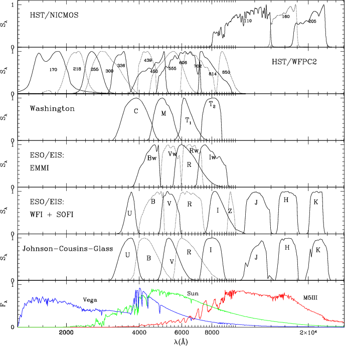
Figure 1. Filter and detector transmission curves for a number of photometric systems, with indicative spectra of Vega, the Sun, and a M5 giant. (Fig. 3 from Girardi et al. 2002) |
In this example we are using a set of photometric measurements (from optical to mid-IR bands) for a sample of massive evolved stars in the Large Magellanic Cloud (based on these works: Bonanos et al. (2009) AJ, 138, 1003, Neugent et al. (2012), ApJ, 749, 177, and Davies, Crowther & Beasor (2018), MNRAS, 478, 313).
Our aim is to use a method that will help us distinguish different classes of objects. For our purposes we will use OBA stars (main-sequence objects), OBAe (a subcategory of OBA stars with circumstellar disks and emission lines), Wolf-Rayet stars (hot evolved stars with strong stellar winds that actually strip their envelopes), Yellow and Red supergiants (evolved massive stars). For convenience we will use OBA, OBAe, WR, YSG, and RSG, respectively, as labels.
★ A similar, but more elaborated, implementation is performed in Maravelias et al. (2022), A&A, 666, 122.
Load and examine data#
dfile = "data/LMC_phot_data.csv"
df_data = pd.read_csv(dfile)
#examine df_data
print("Let us see what we have:\n")
print(df_data)
print("-"*25)
print("The column names:")
print(df_data.columns)
print("-"*25)
print("Let's print the spectral types only:")
print(df_data['SpT'])
Let us see what we have:
Name RAJ2000 DEJ2000 U e_U B \
0 BAT99-1 71.384376 -70.253029 15.001 0.037 15.647
1 Sk -67 1 71.422752 -67.570526 12.829 0.038 13.720
2 Sk -70 1a 71.864998 -70.562698 12.693 0.010 13.654
3 Sk -69 8 72.329376 -69.431831 10.838 0.060 11.714
4 BAT99-2 72.400900 -69.348400 15.633 0.038 16.495
... ... ... ... ... ... ...
1034 2MASS_J05030897-6626555 75.787327 -66.448763 13.143 0.015 12.323
1035 2MASS_J04563991-6644367 74.166321 -66.743549 11.230 0.050 11.598
1036 2MASS_J05032232-6622112 75.842956 -66.369824 NaN NaN 13.217
1037 2MASS_J05013419-6612519 75.392510 -66.214451 12.954 0.225 13.396
1038 2MASS_J04470444-6706530 71.768509 -67.114777 10.351 0.104 11.219
e_B V e_V I ... e_[3.6] [4.5] e_[4.5] [5.8] \
0 0.029 15.778 0.1701 15.643 ... 0.039 13.618 0.032 13.437
1 0.025 13.668 0.0331 13.413 ... 0.039 12.411 0.027 12.141
2 0.010 13.716 0.0101 13.685 ... 0.037 13.743 0.036 13.731
3 0.078 11.572 0.1681 11.461 ... 0.031 11.052 0.030 11.031
4 0.030 16.579 0.0251 16.447 ... 0.037 14.511 0.043 14.461
... ... ... ... ... ... ... ... ... ...
1034 0.153 11.222 0.2110 NaN ... 0.048 11.518 0.030 11.538
1035 0.100 11.452 0.0560 11.369 ... 0.024 11.126 0.028 11.125
1036 0.111 11.106 0.1810 NaN ... 0.021 10.875 0.023 10.913
1037 0.033 12.850 0.0930 10.659 ... 0.026 10.080 0.022 9.945
1038 0.095 11.035 0.1140 10.992 ... 0.022 10.744 0.026 10.712
e_[5.8] [8.0] e_[8.0] [24] e_[24] SpT
0 0.046 12.996 0.051 NaN NaN WR
1 0.037 11.838 0.045 NaN NaN OBAe
2 0.048 NaN NaN NaN NaN OBA
3 0.026 11.023 0.043 NaN NaN OBA
4 0.105 NaN NaN NaN NaN WR
... ... ... ... ... ... ...
1034 0.027 11.535 0.030 9.630 NaN YSG
1035 0.025 11.018 0.032 9.096 NaN YSG
1036 0.026 10.908 0.029 9.722 NaN YSG
1037 0.028 9.903 0.028 9.194 0.336 YSG
1038 0.025 10.648 0.054 6.073 0.040 YSG
[1039 rows x 28 columns]
-------------------------
The column names:
Index(['Name', 'RAJ2000', 'DEJ2000', 'U', 'e_U', 'B', 'e_B', 'V', 'e_V', 'I',
'e_I', 'J', 'e_J', 'H', 'e_H', 'K', 'e_K', '[3.6]', 'e_[3.6]', '[4.5]',
'e_[4.5]', '[5.8]', 'e_[5.8]', '[8.0]', 'e_[8.0]', '[24]', 'e_[24]',
'SpT'],
dtype='str')
-------------------------
Let's print the spectral types only:
0 WR
1 OBAe
2 OBA
3 OBA
4 WR
...
1034 YSG
1035 YSG
1036 YSG
1037 YSG
1038 YSG
Name: SpT, Length: 1039, dtype: str
Question [1 min]
Check the table, what do you notice here ?
[Spoiler] (click here to expand)
Many sources come without measurements across all filters. This is a particular problem for algortihms that need values to work with.
This problem of ”missing values” is actually the norm than the exception. There are ways to tackle this, e.g. by taking the mean values of the corresponding filters or more elaborated techinques. Check sklearn’s imputation of missing values for more.
Let’s now explore the statistics per group (class) of sources.
unique_cls = df_data['SpT'].unique()
print("> Unique classes:", unique_cls)
print("="*25)
print("> SUMMARY of loaded df_data:")
print("="*25)
for sptype in unique_cls:
number = df_data[df_data['SpT']==sptype].shape[0]
print(f"{sptype:-<6s}--> {number:>3} stars")
> Unique classes: <StringArray>
['WR', 'OBAe', 'OBA', 'RSG', 'YSG']
Length: 5, dtype: str
=========================
> SUMMARY of loaded df_data:
=========================
WR------> 91 stars
OBAe----> 73 stars
OBA-----> 370 stars
RSG-----> 297 stars
YSG-----> 208 stars
bands = [b for b in df_data.columns if 'e_' not in b][3:-1]
def reminder():
"""
A simple function to print all bands
and classes available.
"""
print('Available bands to use: ')
print(','.join(bands))
print('-'*25)
print('Available classes to use:')
print(','.join(unique_cls))
results = []
for spt in unique_cls:
data_spt = df_data[df_data['SpT']==spt]
number_spt = data_spt.shape[0]
# print(spt, number_spt)
row = {
'Class': spt,
'Total': number_spt
}
for b in bands:
data_spt_bnd = data_spt[b]
number_nn = data_spt_bnd.notna().sum()
fraction = number_nn/number_spt
row[b] = fraction * 100
# print(b, fraction)
# print(row)
results.append(row)
phot_data_per = pd.DataFrame(results)
print(f'Available photometry for: {", ".join(bands)}')
print("\nNumber of stars per band (in %)\n")
phot_data_per.round(2)
Available photometry for: U, B, V, I, J, H, K, [3.6], [4.5], [5.8], [8.0], [24]
Number of stars per band (in %)
| Class | Total | U | B | V | I | J | H | K | [3.6] | [4.5] | [5.8] | [8.0] | [24] | |
|---|---|---|---|---|---|---|---|---|---|---|---|---|---|---|
| 0 | WR | 91 | 85.71 | 87.91 | 87.91 | 83.52 | 91.21 | 93.41 | 90.11 | 97.80 | 98.90 | 94.51 | 72.53 | 4.40 |
| 1 | OBAe | 73 | 94.52 | 94.52 | 94.52 | 91.78 | 94.52 | 95.89 | 91.78 | 98.63 | 98.63 | 80.82 | 61.64 | 19.18 |
| 2 | OBA | 370 | 77.30 | 78.92 | 78.92 | 73.51 | 96.49 | 97.57 | 97.03 | 99.19 | 97.84 | 93.51 | 60.27 | 2.70 |
| 3 | RSG | 297 | 88.22 | 99.33 | 99.33 | 95.96 | 100.00 | 99.66 | 100.00 | 98.65 | 98.32 | 98.32 | 98.99 | 99.33 |
| 4 | YSG | 208 | 95.67 | 100.00 | 100.00 | 85.58 | 100.00 | 100.00 | 100.00 | 100.00 | 100.00 | 100.00 | 95.67 | 100.00 |
Can we classify by eye?#
The class-count summary above reveals a key challenge: some classes have more sources than others.
The color-color diagram below places all classes together in a 2-dimensional photometric space. Even after choosing an informative pair of colors, the class regions overlap heavily. This overlap is the core reason we need a machine learning classifier.
# Color-color diagram: all classes in the same photometric space
# V-J traces temperature; J-K traces circumstellar emission and mass-loss
fig, ax = plt.subplots(figsize=(7, 5))
for spt in unique_cls:
mask = df_data['SpT'] == spt
v_j = df_data.loc[mask, 'V'] - df_data.loc[mask, 'J']
j_k = df_data.loc[mask, 'J'] - df_data.loc[mask, 'K']
# Keep only sources with both colors measured
valid = v_j.notna() & j_k.notna()
ax.scatter(v_j[valid], j_k[valid], label=spt, s=15, alpha=0.6)
ax.set_xlabel('V $-$ J (mag)')
ax.set_ylabel('J $-$ K (mag)')
ax.legend(fontsize=9, markerscale=2)
ax.set_title('Color-color diagram — all stellar classes')
plt.tight_layout()
plt.show()
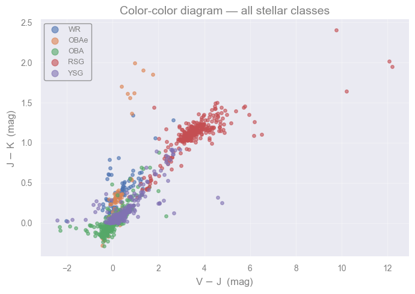
Discuss [2 min]
Look at the class counts from the table above. The Ordinary B/A-type (OBA) stars far outnumber the Wolf-Rayet (WR) and Yellow Supergiant (YSG) classes.
A classifier that always predicts “OBA” would have very high overall accuracy. Is that useful?
For the science goal of finding every WR star, which is the worse mistake: OBA labeled as WR (a false positive), or WR labeled as OBA (a false negative)?
Visualize data - select features#
reminder()
Available bands to use:
U,B,V,I,J,H,K,[3.6],[4.5],[5.8],[8.0],[24]
-------------------------
Available classes to use:
WR,OBAe,OBA,RSG,YSG
Let’s plot the data.
def selmags( band1, band2, cls):
"""
Function to select sources of a specific
spectral class (cls) and return the magnitudes
that correspond to bands 1 and 2.
"""
# select all rows of the "cls" type
data_cls = df_data[df_data['SpT']==cls]
# print(band1, band2)
mag1 = data_cls[band1].values
mag2 = data_cls[band2].values
return mag1, mag2
def plotmags( selected_bnd, selected_spt):
""" Function to plot magnitudes and colors
for sources corresponding to the selected classes.
NOTEs:
- selected_bnd: a list of four magnitudes
- selected_spt: a list of selected spectral types
Output: two sets of plots.
"""
fig, ax = plt.subplots(2,2, figsize=(10, 10))
legend_fs = 16
print('- plot1:')
for s in selected_spt:
plt1 = selmags( selected_bnd[0], selected_bnd[1], s)
# calculate the number of sources to be plotted
# both arrays have nan values, and plot is smart enough to
# not plot those points.
# but we need to know what we are missing!
mask1 = np.isfinite(plt1[0]) & np.isfinite(plt1[1])
n_points_1_kept = np.count_nonzero(mask1)
print(f'-- {s}: excluding {len(plt1[0])-n_points_1_kept} out of {len(plt1[0])} sources ({(len(plt1[0])-n_points_1_kept)/len(plt1[0])*100:.1f}%)')
ax[0,0].plot(plt1[0], plt1[1], 'o', label=f'{s}: {n_points_1_kept}')
ax[0,0].set_xlabel(f'{selected_bnd[0]}') #'-{band1_2}')
ax[0,0].set_ylabel(selected_bnd[1])
ax[0,0].invert_yaxis()
ax[0,0].invert_xaxis()
ax[0,0].legend(fontsize=legend_fs)
ax[0,1].plot(plt1[0]-plt1[1], plt1[1], 'o', label=f'{s}: {n_points_1_kept}')
ax[0,1].set_xlabel(f'{selected_bnd[0]}-{selected_bnd[1]}')
ax[0,1].set_ylabel(selected_bnd[1])
ax[0,1].invert_yaxis()
ax[0,1].legend(fontsize=legend_fs)
print()
print('- plot2:')
for s in selected_spt:
plt2 = selmags( selected_bnd[2], selected_bnd[3], s)
mask2 = np.isfinite(plt2[0]) & np.isfinite(plt2[1])
n_points_2_kept = np.count_nonzero(mask2)
print(f'-- {s}: excluding {len(plt2[0])-n_points_2_kept} out of {len(plt2[0])} sources ({(len(plt2[0])-n_points_2_kept)/len(plt2[0])*100:.1f}%)')
ax[1,0].plot(plt2[0], plt2[1], 'o', label=f'{s}: {n_points_2_kept}')
ax[1,0].set_xlabel(f'{selected_bnd[2]}') #'-{band2_2}')
ax[1,0].set_ylabel(selected_bnd[3])
ax[1,0].invert_yaxis()
ax[1,0].invert_xaxis()
ax[1,0].legend(fontsize=legend_fs)
ax[1,1].plot(plt2[0]-plt2[1], plt2[1], 'o', label=f'{s}: {len(plt2[0])}')
ax[1,1].set_xlabel(f'{selected_bnd[2]}-{selected_bnd[3]}')
ax[1,1].set_ylabel(selected_bnd[3])
ax[1,1].invert_yaxis()
ax[1,1].legend(fontsize=legend_fs)
plt.show()
Exercise [5 min]
Objective: Data visualization and exploration - which features to pick ?
Task: Change the bands you use to plot the CMDs as well as the number of classes to consider, and try to answer:
What happens if you start increasing the number of classes to consider ?
How the selection of bands (e.g. adding more bands) influence the number of objects to plot (or get rejected) ?
Would you prefer to use combinations with few or more objects ?
plotmags(['B', 'V', 'H','K'], ['WR', 'OBA'])
- plot1:
-- WR: excluding 11 out of 91 sources (12.1%)
-- OBA: excluding 78 out of 370 sources (21.1%)
- plot2:
-- WR: excluding 9 out of 91 sources (9.9%)
-- OBA: excluding 13 out of 370 sources (3.5%)
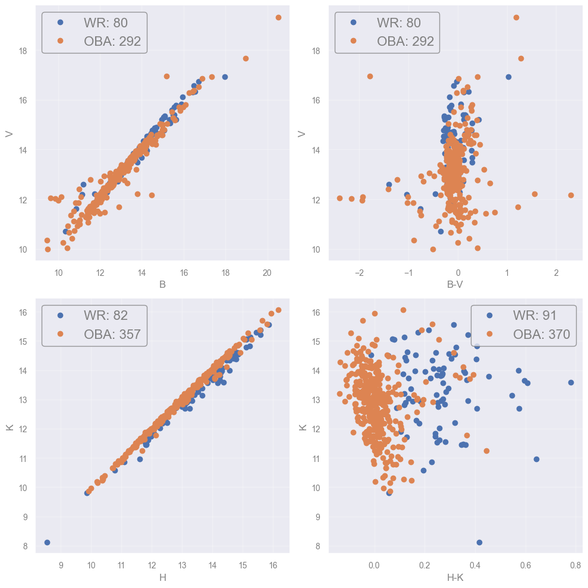
[Spoiler] (click here to expand)
The task becomes more difficult as classes start to overlap. Some combinations may prove better to separate some classes but there is not a single optimal one.
In order to make the plots we need sources with measuremets in both bands. By enforcing this we actually exclude objects with missing data. That results in decreasing number of sources.
In principle we would like to take advantage of all available sources. That give us a better sampling of their parameters’ space. If only few sources remain then we actually lose information.
Hence, we would like to maximize the number of sources used. In problems with already small numbers (like in this example) this can be crucial.
A working combination:
plotmags(['V', 'J', 'K','[4.5]'], ['RSG', 'OBA'])
- plot1:
-- RSG: excluding 2 out of 297 sources (0.7%)
-- OBA: excluding 88 out of 370 sources (23.8%)
- plot2:
-- RSG: excluding 5 out of 297 sources (1.7%)
-- OBA: excluding 18 out of 370 sources (4.9%)
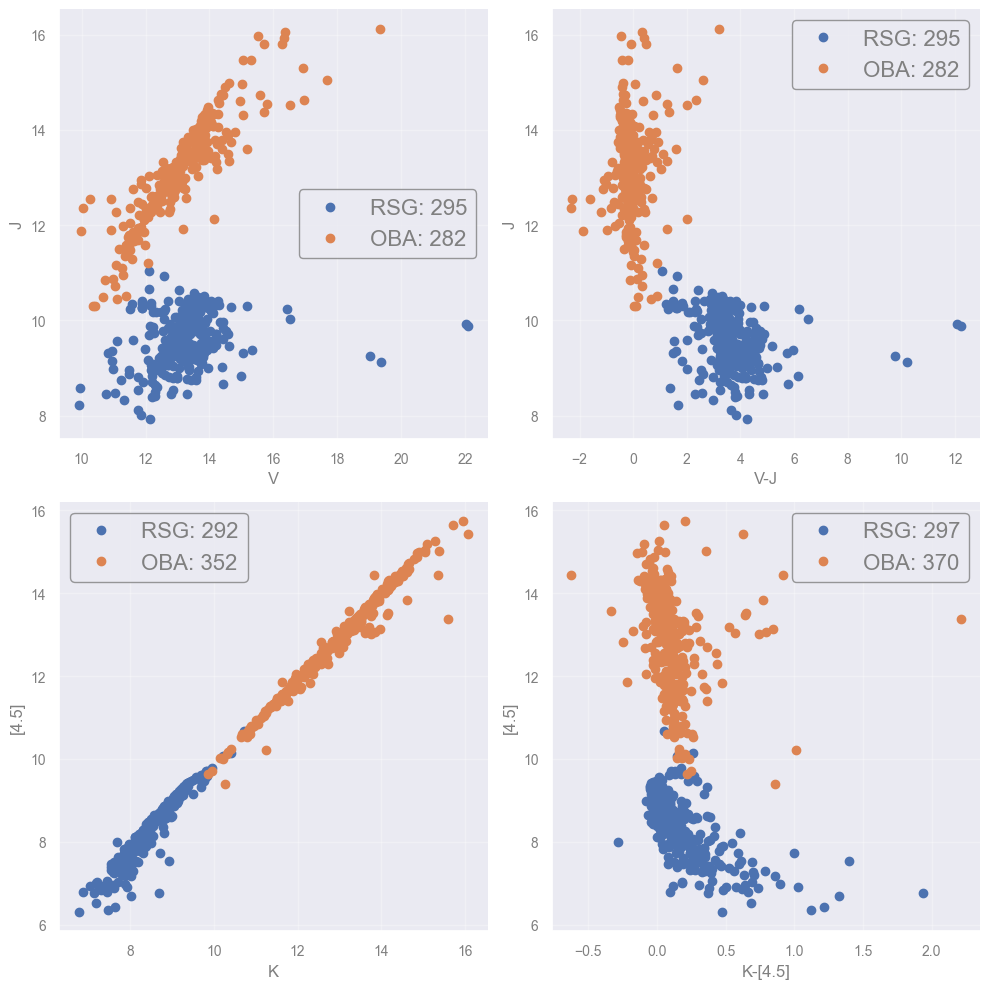
What have we achieved so far?
To examine our data and select which features to use.
(Now is the TIME to) Select an Algorithm#
Before we are able to select an algorithm to tackle with our problem we need to first understand what each algorithm that we are thinking of implimenting does.
The Support Vector Machine (SVM) algorithm#
The boundary (in 2D)#
Support vector machine (SVM) is a way of choosing a decision boundary between different classes.
The classification boundary is provided by the line (in 2D) that is found in the middle of the two lines defined by the closest points of each class, which are called support vectors. The margin is the distance between these two parallel lines. By maximizing this margin, the SVM achieves the best possible separation with the largest safety zone between classes.
{kind=link}
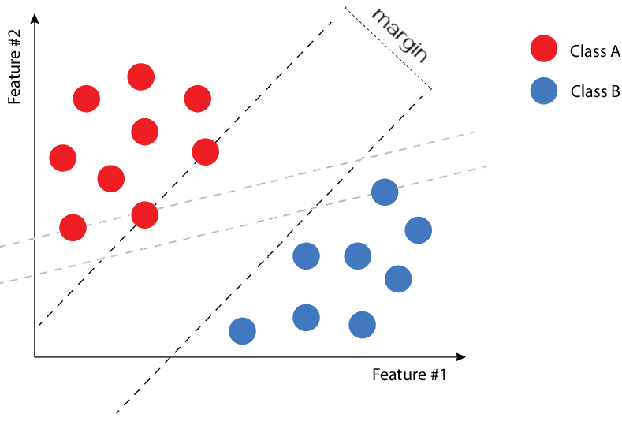
{kind=link}
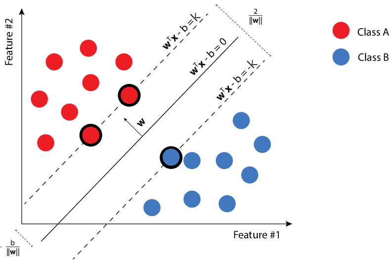
The dashed line separating two classes (red and blue). The closest points to the line from each class are the suport vectors that "suport" the bashed lines. |
Infinite possible boundaries can separate the two classes. SVM algorithms find the one that maximizes the distance between the lines defined by the support vectors.
Minimizing the loss function — again!#
The supported (solid) lines can be defined as:
where \(x\) is the coordinate on the \((x_1, x_2)\) plane, \(w\) is a \(2\times1\) matrix and \(b\) a scalar. It turns out that these lines are separated by a distance \(2 / ||w||\). Finding the ideal classification boundary, i.e. the one maximizing the distance, is therefore a problem of minimizing \(||w||\):
And… this is what SVM algorithms do!
★ For a complete mathematical formulation, consult the Idiot’s guide to Support vector machines, by Robert Berwick.
Separable classes (or not)#
We cannot always assume that 2 classes are separable without “contamination”. That is why SVM algorithms include a tunable parameter (\(C\)) which penalizes misclassifications.
{kind=link}
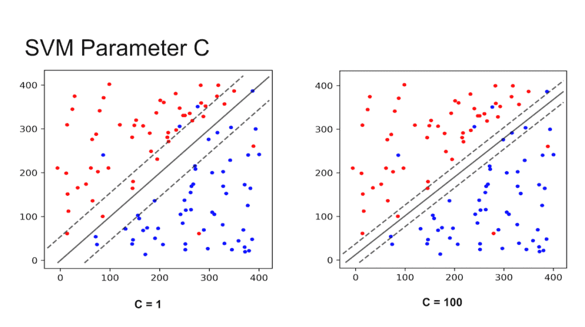
The effect of the $C$ parameter on misclassifications. (Credit: SVM: What makes it superior to the Maximal-Margin and Support Vector Classifiers?, by Shivam Sharma) |
Small \(C\) → wide margin → allows more misclassification
Large \(C\) → narrow margin → allows less misclassification
The SVM finds the line that maximizes the margin, and indirectly minimizes the misclassifications. However, SVM is not designed to minimize the contamination per se.
Multiple classes#
The SVM method can be applied for multiple classes as well.
{kind=link}
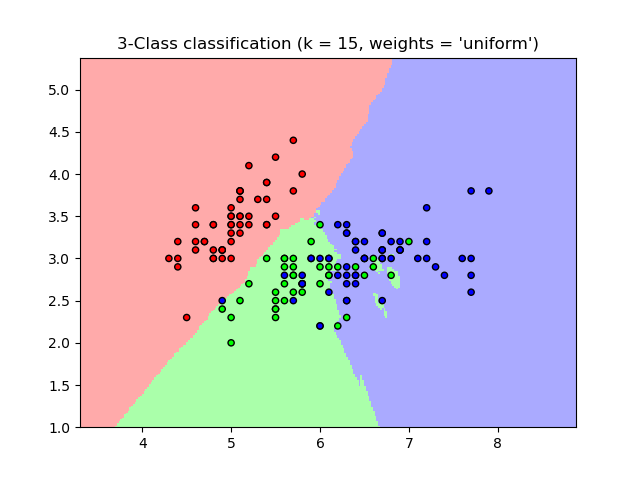
SVM applied to 3 different classes. |
Multiple dimensions#
In the case of a sample characterized by three parameters (X, Y, Z), the scatter plot becomes a 3D plot. Then, the boundary between the classes is not a line but a plane. Because the method can be extrapolated to N-dimensions, the boundary can be generalised as a hyperplane.
{kind=link}
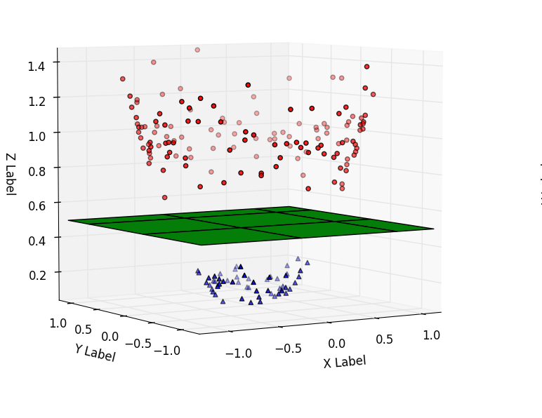
Support vector machine applied for 3D features and three classes. |
Non-linear boundaries#
{kind=link}
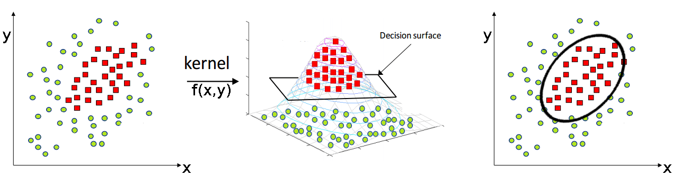
Sometimes, linear boundaries may not be optimal and a non-linear SVM should be used instead. The left panel of the figure below shows a 2D scatter plot of two different classes which cannot be linearly separated.
In order to find non-linear boundaries we can tackle the problem in a higher dimensional space. We use a process called kernelization, which consists in using a kernel function to map our data to an additional dimension. Then, we draw the decision hyperplane into this higher dimensional space.
The central panel shows that once the 2D data are mapped to a 3D space by a Gaussian-like function, the classes are easily separable by a 3D hyperplane. Projecting back in 2D gives the non-linear boundary (right panel).
When no linear boundaries can be used, the SVM method can be applied using a kernel. |
Choosing the kernel function#
Useful kernel functions shall satisfy specific conditions, so that in practice only a few are used. In the previous example, the Gaussian Radial Basis Function is used:
where \(\gamma\) is a hyperparameter that is tuned (in our example we use an arbitrary value but in principle we should use cross-validation methods).
Final remarks on SVM#
Pros
Good at dealing with high dimensional data
Works well on small data sets
Cons
Picking the right kernel and parameters can be computationally intensive
It suffers from contamination
★ For further information on SVM, consult Support Vector Machine - Classification, by Saed Sayad.
Apply the SVM#
The binary problem#
In this case we examine a binary classification problem where we select one class (or more that will group into a single one) and the rest classes as contaminants. The purpose is to check if we can separate efficiently these two classes.
def process_data( bands2use, binary_classes2use ):
"""
Process input df_data to return arrays
of magnitudes and (consecutive) colors
based on the input bands (band2use).
Option to prepare df_data for binary classification
if binary_classes2use contains classes or not.
Selected objects are assigned 1, while the contaminants 0.
"""
data_diff = -df_data[bands2use].diff(axis=1).iloc[:, 1:]
data_diff.columns = [f"{c1}-{c2}" for c1, c2 in zip(bands2use[:-1], bands2use[1:])]
diff_columns = data_diff.columns.values
# print(data_diff)
# print(data_diff.columns.values)
working = pd.concat([df_data[['Name']+bands2use+['SpT']], data_diff], axis=1)
# print(working)
if len(binary_classes2use)!=0:
working['keep'] = working['SpT'].isin(binary_classes2use).astype(int)
else:
working['keep'] = working['SpT']
# remove all nan rows
working_clean = working.dropna()
print(f'# stars with mags in:\n',
f'{",".join([bb for bb in bands2use])}'
)
print("=========================")
print("Type initial final ")
print("-------------------------")
for s in unique_cls:
print(
f"{s:<4} {(working['SpT']==s).sum():>9}",
f"{(working_clean['SpT']==s).sum():>8}"
)
print('-'*24)
print(f'TOTAL: {working.shape[0]:>7} {working_clean.shape[0]:>7}')
if len(binary_classes2use)!=0:
print('='*24)
print(f'classifying: {(working_clean['keep']==1).sum():>10}')
print(f'contaminants: {(working_clean['keep']==0).sum():>10}')
data_labels = working_clean['keep'].to_numpy()
else:
data_labels = working_clean['SpT'].to_numpy()
# print(working_clean[diff_columns])
data_mags = working_clean[bands2use].to_numpy()
data_clrs = working_clean[diff_columns].to_numpy()
data_objects = working_clean['Name'].to_numpy()
return data_mags, data_clrs, data_objects, data_labels
reminder()
Available bands to use:
U,B,V,I,J,H,K,[3.6],[4.5],[5.8],[8.0],[24]
-------------------------
Available classes to use:
WR,OBAe,OBA,RSG,YSG
Select here the class(es) you would like to distinguish from the rest, along with the bands to use.
class2keep = ['RSG']
# Select the bands you want to use here:
bands_selected = ['V', 'J', '[4.5]']
ml_data_mags, ml_data_clrs, ml_objects, ml_labels = process_data( bands_selected, class2keep)
# stars with mags in:
V,J,[4.5]
=========================
Type initial final
-------------------------
WR 91 76
OBAe 73 65
OBA 370 276
RSG 297 291
YSG 208 208
------------------------
TOTAL: 1039 916
========================
classifying: 291
contaminants: 625
NOTE: the process_data() function examines and keeps only the sources with values across all bands. In other words, we remove sources with missing values (according to the bands selected).
Let’s print the labels to see how they look like.
print(ml_labels)
[0 0 0 0 0 0 0 0 0 0 0 0 0 0 0 0 0 0 0 0 0 0 0 0 0 0 0 0 0 0 0 0 0 0 0 0 0
0 0 0 0 0 0 0 0 0 0 0 0 0 0 0 0 0 0 0 0 0 0 0 0 0 0 0 0 0 0 0 0 0 0 0 0 0
0 0 0 0 0 0 0 0 0 0 0 0 0 0 0 0 0 0 0 0 0 0 0 0 0 0 0 0 0 0 0 0 0 0 0 0 0
0 0 0 0 0 0 0 0 0 0 0 0 0 0 0 0 0 0 0 0 0 0 0 0 0 0 0 0 0 0 0 0 0 0 0 0 0
0 0 0 0 0 0 0 0 0 0 0 0 0 0 0 0 0 0 0 0 0 0 0 0 0 0 0 0 0 0 0 0 0 0 0 0 0
0 0 0 0 0 0 0 0 0 0 0 0 0 0 0 0 0 0 0 0 0 0 0 0 0 0 0 0 0 0 0 0 0 0 0 0 0
0 0 0 0 0 0 0 0 0 0 0 0 0 0 0 0 0 0 0 0 0 0 0 0 0 0 0 0 0 0 0 0 0 0 0 0 0
0 0 0 0 0 0 0 0 0 0 0 0 0 0 0 0 0 0 0 0 0 0 0 0 0 0 0 0 0 0 0 0 0 0 0 0 0
0 0 0 0 0 0 0 0 0 0 0 0 0 0 0 0 0 0 0 0 0 0 0 0 0 0 0 0 0 0 0 0 0 0 0 0 0
0 0 0 0 0 0 0 0 0 0 0 0 0 0 0 0 0 0 0 0 0 0 0 0 0 0 0 0 0 0 0 0 0 0 0 0 0
0 0 0 0 0 0 0 0 0 0 0 0 0 0 0 0 0 0 0 0 0 0 0 0 0 0 0 0 0 0 0 0 0 0 0 0 0
0 0 0 0 0 0 0 0 0 0 1 1 1 1 1 1 1 1 1 1 1 1 1 1 1 1 1 1 1 1 1 1 1 1 1 1 1
1 1 1 1 1 1 1 1 1 1 1 1 1 1 1 1 1 1 1 1 1 1 1 1 1 1 1 1 1 1 1 1 1 1 1 1 1
1 1 1 1 1 1 1 1 1 1 1 1 1 1 1 1 1 1 1 1 1 1 1 1 1 1 1 1 1 1 1 1 1 1 1 1 1
1 1 1 1 1 1 1 1 1 1 1 1 1 1 1 1 1 1 1 1 1 1 1 1 1 1 1 1 1 1 1 1 1 1 1 1 1
1 1 1 1 1 1 1 1 1 1 1 1 1 1 1 1 1 1 1 1 1 1 1 1 1 1 1 1 1 1 1 1 1 1 1 1 1
1 1 1 1 1 1 1 1 1 1 1 1 1 1 1 1 1 1 1 1 1 1 1 1 1 1 1 1 1 1 1 1 1 1 1 1 1
1 1 1 1 1 1 1 1 1 1 1 1 1 1 1 1 1 1 1 1 1 1 1 1 1 1 1 1 1 1 1 1 1 1 1 1 1
1 1 1 1 1 1 1 1 1 1 1 1 1 1 1 1 1 1 1 1 1 1 1 1 1 1 1 1 1 1 1 1 1 1 1 1 1
1 1 1 1 1 0 0 0 0 0 0 0 0 0 0 0 0 0 0 0 0 0 0 0 0 0 0 0 0 0 0 0 0 0 0 0 0
0 0 0 0 0 0 0 0 0 0 0 0 0 0 0 0 0 0 0 0 0 0 0 0 0 0 0 0 0 0 0 0 0 0 0 0 0
0 0 0 0 0 0 0 0 0 0 0 0 0 0 0 0 0 0 0 0 0 0 0 0 0 0 0 0 0 0 0 0 0 0 0 0 0
0 0 0 0 0 0 0 0 0 0 0 0 0 0 0 0 0 0 0 0 0 0 0 0 0 0 0 0 0 0 0 0 0 0 0 0 0
0 0 0 0 0 0 0 0 0 0 0 0 0 0 0 0 0 0 0 0 0 0 0 0 0 0 0 0 0 0 0 0 0 0 0 0 0
0 0 0 0 0 0 0 0 0 0 0 0 0 0 0 0 0 0 0 0 0 0 0 0 0 0 0 0]
NOTE: If you have more than 2 bands selected the following plot will use the first two. Modify accordingly to plot other combinations.
fig = plt.figure(figsize=(8,8))
conts = np.where( ml_labels==0 )[0]
clasf = np.where( ml_labels!=0 )[0]
plt.plot( ml_data_mags[conts][:,0], ml_data_mags[conts][:,1], 'o',
label='Contaminants')
plt.plot( ml_data_mags[clasf][:,0], ml_data_mags[clasf][:,1], '*',
label=f'Selected ({"+".join(class2keep)})')
plt.gca().invert_yaxis()
plt.xlabel(f'{bands_selected[0]}') #'-{bands_selected[1]}')
plt.ylabel(bands_selected[1])
plt.legend(fontsize=14)
plt.show()
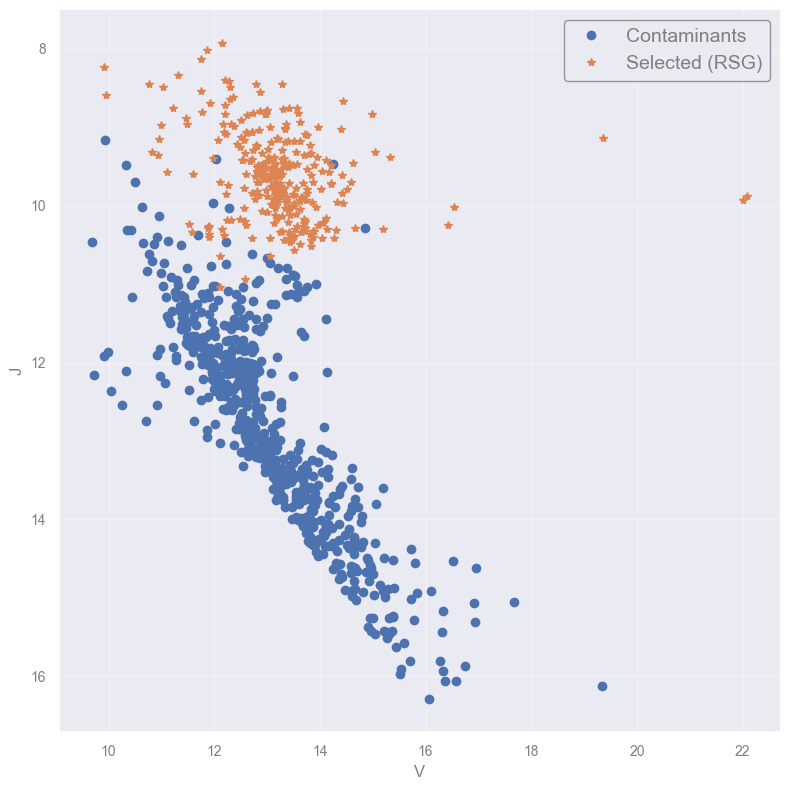
Introducing data splitting and the Golden rule#
In supervised approaches we want to “teach” the algorithms what they need to learn, before start the predictions. In this case we want the SVM to identify the common properties of the two sub groups (1 including all possible classes used, and 0 as contaminants). However, if we provide all data the algorithm will learn this “by heart” and fit them perfectly (called overfitting), and when new data appear will probably misclassify.
So, what can we do ? We have to split the data and follow the Golden rule.

Indicative recipe for splitting a dataset into the analysis sets. For very large datasets (above $10^5$ entries), the percentages of validation and test can be substantially smaller. |
What are the different sets for?
Train set \(~~~~~~\rightarrow\) Learn the model parameters
Validation set \(\rightarrow\) Check that the learnt model is not overfitting/underfitting the train set
Test set \(~~~~~~~\rightarrow\) Assess the model performance
The Golden Rule of Machine Learning
Treat the test data as if they come from the future
So let’s go on and split our data now.
NOTE: We will only use the train/test split as our purpose now is not to optimize the model (you will see more on that in ML Basic Practices).
NOTE: You can either use magnitudes (ml_data_mags) or color indeces (ml_data_clrs).
from sklearn.model_selection import train_test_split
X_train, X_test, y_train, y_test = train_test_split(ml_data_mags, ml_labels,
test_size=0.3) #, random_state=42)
print(f'- From {len(ml_objects)} sources:')
print(f' {len(X_train)} (training)')
print(f' {len(X_test)} (test)')
print()
print(f'Test labels: {y_test}')
- From 916 sources:
641 (training)
275 (test)
Test labels: [0 0 0 0 1 0 0 0 0 1 0 0 0 0 0 0 0 0 0 0 0 0 0 1 0 0 1 0 0 0 1 0 0 1 1 1 1
0 1 1 0 1 0 0 0 0 0 1 0 0 0 0 0 0 0 1 0 1 1 0 0 0 1 1 0 0 0 0 1 0 0 0 0 0
1 0 1 1 1 0 0 0 0 0 0 0 0 1 1 0 1 1 0 0 1 0 0 0 0 1 0 1 1 0 0 1 1 0 1 1 0
0 0 0 0 0 0 0 1 0 0 0 1 0 0 1 1 0 1 0 0 0 0 1 0 0 0 0 0 0 0 1 0 0 0 1 0 1
0 1 1 1 0 0 1 0 0 0 0 0 0 0 0 0 0 1 1 0 0 0 0 1 0 0 0 0 0 1 0 0 1 0 0 0 0
1 0 1 0 0 0 0 0 0 0 0 1 0 1 0 1 1 0 0 0 1 1 1 0 0 1 0 0 1 0 1 0 0 0 0 0 0
0 1 0 0 0 1 0 1 1 1 1 0 0 1 1 0 0 0 0 0 0 0 1 0 0 0 1 0 0 0 1 1 1 0 0 1 1
0 1 1 0 0 0 0 0 1 0 0 1 1 0 0 0]
Questions [3 min]
What happens when you repeat the process?
How can we solve this?
Where does 42 comes from?
HINTS:
- Use Ctrl+Enter to run a cell without continuing to the next one
- Check the online documentation (train-test_split)
[Spoiler] (click here to expand)
The process is random so every time different objects are selected as train to test.
We can use
random_stateto have the same split all the time (this is mainly for developing and debugging pusposes, as it helps to reproduce the results).Whaat? You do not know?
- shame on you!
- look it up (many ways to do it nowadays!)
Now, let’s use the classifier to fit our training set (X_train) and predict the classes of the test samples (X_test). We will print some metrics to check the performance.
from sklearn.svm import SVC
clf = SVC(kernel='linear', C=1.0) # 1.0 is the default value, must be positive
clf.fit(X_train, y_train)
# If you want to see behind the scenes
# display(clf.__dict__)
from sklearn import metrics
yhat = clf.predict(X_test)
#print(yhat)
print(f"Classification report:\n\n {metrics.classification_report(y_test, yhat)}")
print(60 * "-")
print(f"Confusion matrix: \n\n {metrics.confusion_matrix(y_test, yhat)}")
Classification report:
precision recall f1-score support
0 0.97 0.99 0.98 190
1 0.99 0.93 0.96 85
accuracy 0.97 275
macro avg 0.98 0.96 0.97 275
weighted avg 0.97 0.97 0.97 275
------------------------------------------------------------
Confusion matrix:
[[189 1]
[ 6 79]]
but… aaarg, what are all these metrics about ?
Model evaluation metrics - a mini discussion#
There is a number of assessment metrics for the performance of a classifier. We start by introducing the idea of the confusion matrix.
{kind=link}
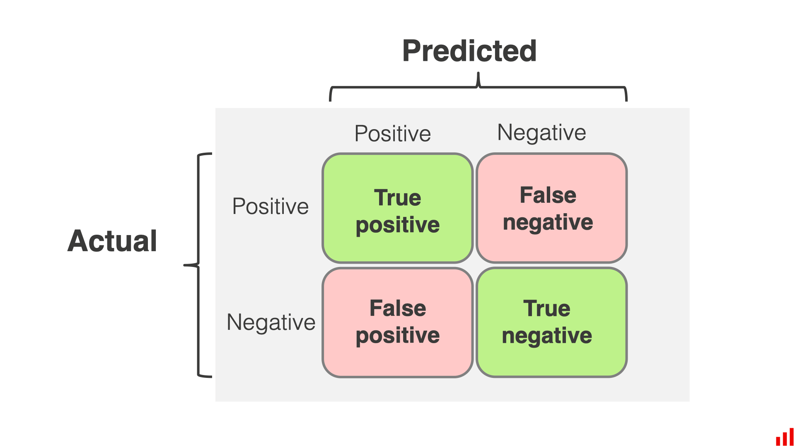
Confusion matrix for classification. (Credit: from EvidentlyAI.com) |
Defining some metrics:
Precision — fraction of detected positives that are real:
Recall — fraction of real positives that are detected:
F1-score — harmonic mean of precision and recall:
Accuracy — fraction of all correct predictions:
Macro averaging, the mean for any metric and category, providing the same weight for all categories (independent of their sample).
Weighted averaging: the mean of all metrics by considering the number of samples per class (i.e. it gives higher weights to the classes with larger samples).
Support: the number of samples per class on the test set.
Note 1: You may also encounter the terms sensitivity and specificity which corresponds to the recall of the positive and the negative class, respectively, in binary problems.
Note 2: In astrophysics we use the terms completeness and contamination (see Classification, by Andy Connolly):
An interesting presentation of this topic can be found here.
And now let’s go on with our example… plotting a prettier presentation of the previous confusion matrix.
def plot_confusion_matrix(cm,
target_names,
title='Confusion matrix',
cmap=None,
normalize=True):
"""
given a sklearn confusion matrix (cm), make a nice plot
Arguments
---------
cm: confusion matrix from sklearn.metrics.confusion_matrix
target_names: given classification classes such as [0, 1, 2]
the class names, for example: ['high', 'medium', 'low']
title: the text to display at the top of the matrix
cmap: the gradient of the values displayed from matplotlib.pyplot.cm
see http://matplotlib.org/examples/color/colormaps_reference.html
plt.get_cmap('jet') or plt.cm.Blues
normalize: If False, plot the raw numbers
If True, plot the proportions
Usage
-----
plot_confusion_matrix(cm = cm, # confusion matrix created by
# sklearn.metrics.confusion_matrix
normalize = True, # show proportions
target_names = y_labels_vals, # list of names of the classes
title = best_estimator_name) # title of graph
Citation
---------
http://scikit-learn.org/stable/auto_examples/model_selection/plot_confusion_matrix.html
"""
accuracy = np.trace(cm) / float(np.sum(cm))
misclass = 1 - accuracy
if cmap is None:
cmap = plt.get_cmap('Blues')
plt.figure(figsize=(6,6))
plt.imshow(cm, interpolation='nearest', cmap=cmap, alpha=0.5)
# plt.title(title)
cbar = plt.colorbar()
cbar.set_label('# sources', fontsize=16)
cbar.ax.tick_params(labelsize=16) # (fontsize=15)
if target_names is not None:
tick_marks = np.arange(len(target_names))
plt.xticks(tick_marks, target_names, rotation=45, fontsize=15)
plt.yticks(tick_marks, target_names, fontsize=15)
if normalize:
cm = cm.astype('float') / cm.sum(axis=1)[:, np.newaxis]
thresh = cm.max() / 1.5 if normalize else cm.max() / 2
for i, j in itertools.product(range(cm.shape[0]), range(cm.shape[1])):
if normalize:
plt.text(j, i, "{:0.3f}".format(cm[i, j]),
horizontalalignment="center", color="black", fontsize=14 )
#color="white" if cm[i, j] > thresh else "black")
else:
plt.text(j, i, "{:,}".format(cm[i, j]),
horizontalalignment="center", color="black")
# color="white" if cm[i, j] > thresh else "black")
plt.tight_layout()
plt.ylabel('True label', fontsize=16)
plt.xlabel('Predicted label (accuracy={:0.2f})'.format(accuracy, misclass), fontsize=16)
plt.show()
plot_confusion_matrix( metrics.confusion_matrix( y_test, yhat),
[0, 1],
title='Confusion matrix', cmap='BuPu', # for more options see: https://matplotlib.org/stable/tutorials/colors/colormaps.html
normalize=False # True returns fraction, False raw numbers
) # YlOrBr
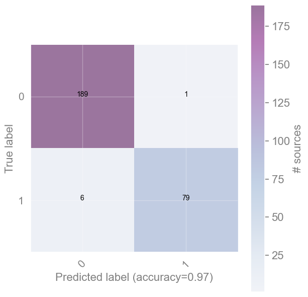
Discuss [2 min]
Look at the 4 cells of the confusion matrix you just produced.
The diagonal cells count correct classifications (True Positives and True Negatives).
The off-diagonal cells count errors: objects assigned to the wrong class.
For the science goal of building a complete catalogue of RSG stars, which type of error is more damaging — a missed RSG or a contaminating non-RSG?
[Spoiler] (click here to expand)
A missed RSG (false negative) is more damaging: the goal is a complete catalogue, and completeness is recall. A missed RSG is silently lost, while a contaminating non-RSG (false positive) can still be caught and removed later (e.g. via follow-up spectroscopy).
Exercise [5 min]
Objective: Explore the effect of classification results by changing some input parameters.
Task: Go back to the previous cells (or if you want make new ones and copy the code from above) so that you experiment with the code. What happens if we start adding more classes into the selected one ?
Optional task: What happens when we start changing the \(C\) parameter?
HINT: the default value is 1, so start increasing/decreasing from this value.
reminder()
Available bands to use:
U,B,V,I,J,H,K,[3.6],[4.5],[5.8],[8.0],[24]
-------------------------
Available classes to use:
WR,OBAe,OBA,RSG,YSG
# enter code here
[Solution below]
# select classes and bands
class2keep = ['RSG', 'WR']
bands_selected = ['V', 'J', '[4.5]']
# process data, pick either mag or clrs
ml_data_mags, ml_data_clrs, ml_objects, ml_labels = process_data( bands_selected, class2keep)
print()
# split data
X_train, X_test, y_train, y_test = train_test_split(ml_data_mags,
ml_labels,
test_size=0.3) #, random_state=42)
print(f'- From {len(ml_objects)} sources:')
print(f' {len(X_train)} (training)')
print(f' {len(X_test)} (test)')
print()
#print(f'Test labels: {y_test}')
# initiate the model, change parameter C
clf = SVC(kernel='linear')
# fit and predict
clf.fit(X_train, y_train)
yhat = clf.predict(X_test)
# plot the confusion matrix
plot_confusion_matrix( metrics.confusion_matrix( y_test, yhat),
[0, 1],
title='Confusion matrix', cmap='BuPu', # for more options see: https://matplotlib.org/stable/tutorials/colors/colormaps.html
normalize=False # True returns fraction, False raw numbers
) # YlOrBr
# stars with mags in:
V,J,[4.5]
=========================
Type initial final
-------------------------
WR 91 76
OBAe 73 65
OBA 370 276
RSG 297 291
YSG 208 208
------------------------
TOTAL: 1039 916
========================
classifying: 367
contaminants: 549
- From 916 sources:
641 (training)
275 (test)
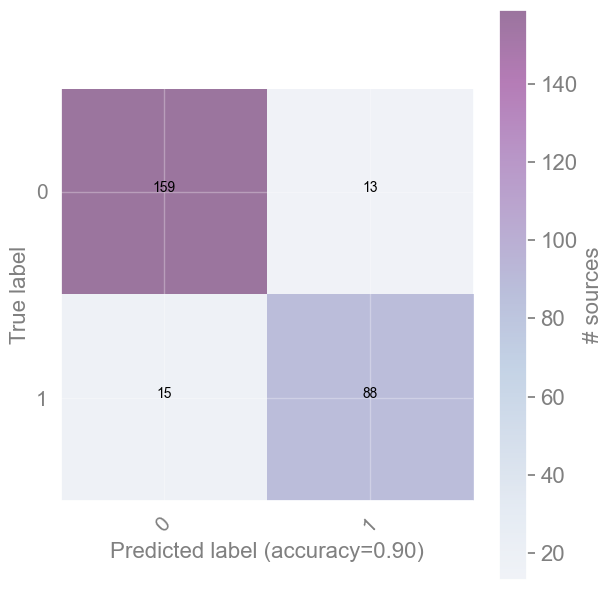
[End of solution]
[Spoiler] (click here to expand)
The performance drops as more classes results in a more complex problem and the classes may overlap in the feature space (confusing the classifier even more!).
Need to fined a balance!
The Random Forest algorithm#
Decision Tree#
A Decision Tree (DT) is simply a top-to-bottom tree-like structure where each node corresponds to a question (or a set of features more generally) that distinguishes objects to two groups, left and right from the node. A decision tree presents the drawback of learning extremely well the training set. That means that DTs overfit the data and they cannot predict very accurately new data.
{kind=link}
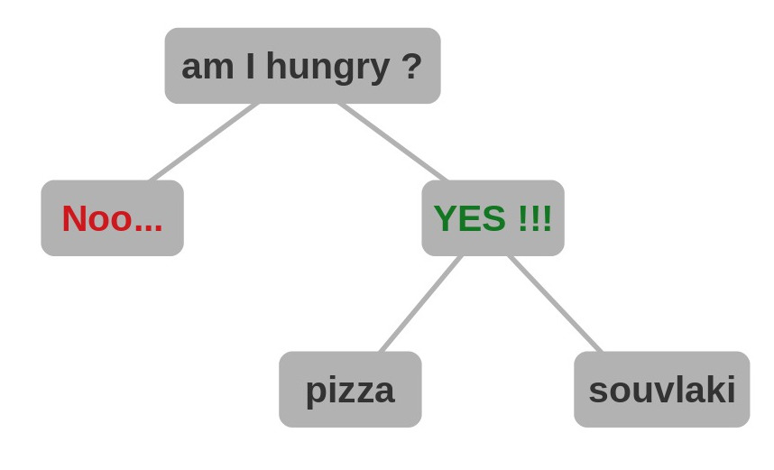
Quick introduction to Decision Trees — how to fulfil an everyday need. (Credit: G. Maravelias) |
Minimizing what?#
To find the optimal way to partition objects, the algorithm needs a metric to quantify this process. One such metric is the Gini impurity, which calculates the probability of an object being incorrectly classified (or assigned to the wrong class) when chosen randomly. It is defined by the formula
where \(n\) is the number of classes, and \(p_i\) is the probability of an object belonging to a specific class for a given value of the variable (feature) under consideration. These probabilities are summed across all values of the feature and all corresponding classes.
The Gini impurity for a node is determined by the average of these values across all classes, weighted by their frequency (for a detailed presentation).
If all objects in a set belong to the same class, the Gini impurity is 0. If it is 1, the class assignments of the objects are random.
Random Forest#
Random Forest (RF) or Random Decision Trees (Breiman (2001), Machine Learning, 45, 5) is a generalization of the DTs, as it utilises a multitude of decision trees. When RF are used as a classification method, for each input datum the final output is the class (/value) given by the mode of the classes of the individual trees.
{kind=link}
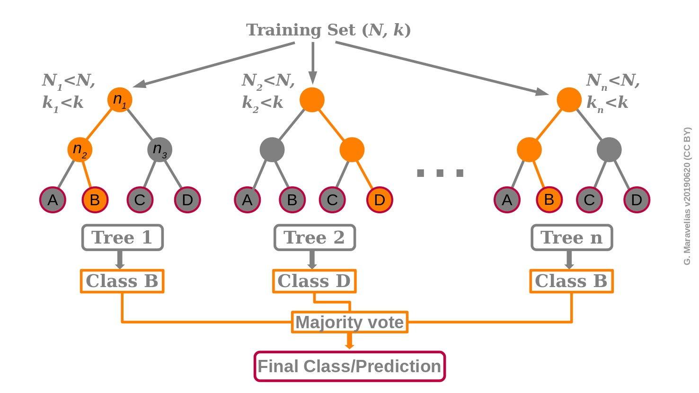
Schematic description of the Random Forest classifier. (Credit: G. Maravelias) |
RF creates a large number of DTs through random selection of a subset of the training set as well as a random selection of features. This randomness reduces the correlation between the different DTs. Since the DTs have different conditions in their nodes and different overall structures, this diversity yield overall robust predictions.
Once the RF has been trained, the data of an unlabeled source (to be classified) are fed into all DTs of the forest. According to its properties and the nodes in each DT, it follows a specific path which leads to a given class. The final output of the RF (the prediction) is an aggregation of all DTs by means of a majority vote.
The fact that RF combines the prediction for a number of individual trees makes it an ensemble method.
★ Reis, Baron, & Shahaf (2019), AJ, 157, 16 provide an excellent description of RFs (for a two-class problem) and present a probabilistic RF method which takes into account the uncertainties on the data and their labels.
Final remarks on Random Forest#
In machine learning most of the effort is actually spent on the sample selection and, most importantly, on the selection of the features used for the classification (feature engineering).
RF partially overcome the latter problem by training each DT on a different sub-set of features, hence training the algorithm to recognize the features which mostly differentiate the objects.
PROS
No need of scaling or transformation of the initial data.
Implicit feature selection.
Suitable for large datasets with many features.
CONS
Not easily interpretable.
Hyperparameter needs good tuning for high accuracy.
Application of Random Forest#
For the implementation, we will use the sklearn.RandomForestClassifier, whose basic parameter (among others) is n_estimators, i.e. the number of trees (default 100).
Using the same dataset, we now approach the same binary problem (RSG vs WR) with the Random Forest, so we can compare it directly against the SVM result above. We’ll see the multi-class case in the exercise at the end of this section.
Exercise [10 min]
Objective: Apply the Random Forest classifier to our dataset.
Task: Follow the actions below to get to some results:
Complete the train-test split and select magnitudes to work with.
Find the proper function for RF and make predictions.
reminder()
Available bands to use:
U,B,V,I,J,H,K,[3.6],[4.5],[5.8],[8.0],[24]
-------------------------
Available classes to use:
WR,OBAe,OBA,RSG,YSG
Note: We keep class2keep_RF = ['RSG', 'WR'] to match the SVM example above, so you can compare the two classifiers directly on the same binary problem. (We’ll switch to the full multi-class case in the final exercise.) Add any number of bands to use.
class2keep_RF = ['RSG', 'WR']
bands_selected_RF = [...]
ml_data_mags, ml_data_clrs, ml_objects, ml_labels = process_data( bands_selected_RF, class2keep_RF)
# splitting data on magnitudes or colors
#X_train, X_test, y_train, y_test = train_test_split(ml_data_mags,
X_train, X_test, y_train, y_test = train_test_split(...,
...,
shuffle=True, stratify=...,
test_size=...) #, random_state=42)
print(f'> From {len(ml_objects)} sources we use {len(X_train)} for training and {len(X_test)} for testing.')
# check if in binary or multi-label mode
if 1 in ml_labels: # binary
confmat_classes = [0,1]
else:
confmat_classes = unique_cls
print('\nStatistics per class:')
k = 0
for c in unique_cls:
items_train = np.where( y_train==c )[0]
items_test = np.where( y_test==c )[0]
items_total = np.where( ml_labels==c )[0]
print(f'> For {c} there are {len(items_total)} sources split in {len(items_train)} (train) and {len(items_test)} (test) samples')
clfrf = ...
# code to fit and predict here (follow SVM structure)
...
...
print(f"Classification report:\n\n {metrics.classification_report(..., ...)}")
plot_confusion_matrix( metrics.confusion_matrix( ..., ...),
confmat_classes,
title='Confusion matrix', cmap='BuPu', # for more options see: https://matplotlib.org/stable/tutorials/colors/colormaps.html
normalize=False # True returns percent, False raw numbers
) # YlOrBr
[Solution below]
reminder()
Available bands to use:
U,B,V,I,J,H,K,[3.6],[4.5],[5.8],[8.0],[24]
-------------------------
Available classes to use:
WR,OBAe,OBA,RSG,YSG
class2keep_RF = ['RSG', 'WR']
bands_selected_RF = ['U','V', 'I', 'J', '[3.6]']
ml_data_mags, ml_data_clrs, ml_objects, ml_labels = process_data( bands_selected_RF, class2keep_RF)
# stars with mags in:
U,V,I,J,[3.6]
=========================
Type initial final
-------------------------
WR 91 72
OBAe 73 63
OBA 370 254
RSG 297 249
YSG 208 172
------------------------
TOTAL: 1039 810
========================
classifying: 321
contaminants: 489
# splitting data on magnitudes or colors
#X_train, X_test, y_train, y_test = train_test_split(ml_data_mags,
X_train, X_test, y_train, y_test = train_test_split(ml_data_clrs,
ml_labels,
shuffle=True, stratify=ml_labels,
test_size=0.3) #, random_state=42)
print(f'> From {len(ml_objects)} sources we use {len(X_train)} for training and {len(X_test)} for testing.')
# check if in binary or multi-label mode
if 1 in ml_labels: # binary
confmat_classes = [0,1]
else:
confmat_classes = unique_cls
print('\nStatistics per class:')
k = 0
for c in unique_cls:
items_train = np.where( y_train==c )[0]
items_test = np.where( y_test==c )[0]
items_total = np.where( ml_labels==c )[0]
print(f'> For {c} there are {len(items_total)} sources split in {len(items_train)} (train) and {len(items_test)} (test) samples')
> From 810 sources we use 567 for training and 243 for testing.
clfrf = RandomForestClassifier()
# code to fit and predict here (follow SVM structure)
clfrf.fit(X_train, y_train)
yhat = clfrf.predict(X_test)
print(f"Classification report:\n\n {metrics.classification_report(y_test, yhat)}")
print(f"Confusion matrix: \n\n {metrics.confusion_matrix(y_test, yhat)}")
plot_confusion_matrix( metrics.confusion_matrix( y_test, yhat),
confmat_classes,
title='Confusion matrix', cmap='BuPu', # for more options see: https://matplotlib.org/stable/tutorials/colors/colormaps.html
normalize=False # True returns percent, False raw numbers
) # YlOrBr
Classification report:
precision recall f1-score support
0 0.94 0.93 0.93 147
1 0.89 0.92 0.90 96
accuracy 0.92 243
macro avg 0.92 0.92 0.92 243
weighted avg 0.92 0.92 0.92 243
Confusion matrix:
[[136 11]
[ 8 88]]
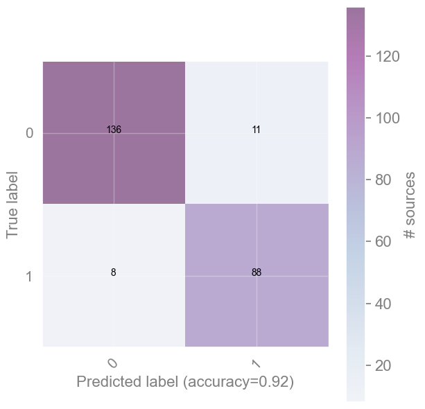
[End of solution]
Questions [3 min]
Why the results change by re-running it ?
What is the difference on the accuracy of the algorithm if we use the colors instead of the magnitudes? Why do it?
[Spoiler] (click here to expand)
RF as the name suggest create always a different set of trees with random eselection of features and data. Consequently, the RF from one run to the other is not the same and there are small variations. However, the results are robust because they are averaging the results from all trees.
Depending on the classes and bands selected the accuracy will (slightly) change. RF are rather insensitive to the input data (scaled or not).
However, colors are distance-independent features, which means that a model build with these features could be applicable to other galaxies also. Colors are distance-independent features, which means that the model could be applicable to other galaxies also. On the contrary, if we use only magnitudes this would mess up the prediction as with distance the sources become fainter.
Exercise — Going Multi-class [15 min]
Objective: So far you’ve solved one binary problem (RSG vs WR) with both SVM and Random Forest. Now apply the same tools to the full 5-class star classification problem.
Data: Same stellar photometry dataset, all 5 classes (OBA, OBAe, WR, YSG, RSG), bands V, J, [4.5].
In particular, you must:
Prepare the data for multi-class classification — use
class2keep = [](all classes) withbands_selected = ['V', 'J', '[4.5]'].Split into train/test sets exactly as you did for the binary case — the only real difference is that
stratify=ml_labelsnow has to preserve 5 classes instead of 2, guaranteeing every class still appears in both train and test sets. Usetest_size=0.1.Train a classifier — your choice: SVM (linear kernel), Random Forest, or both if you want to compare them yourself.
Evaluate with
classification_reportand a confusion matrix.
Hint: Everything else — process_data, train_test_split, fit/predict — works exactly like the binary examples above; only the class list (and stratify now balancing more classes) changes. Use metrics.classification_report for per-class precision, recall, and F1-score, and plot_confusion_matrix to visualise misclassifications.
# Student: Write your code here. Add blocks as you deem fit.
class2keep = [] # empty = all 5 classes
[Solution below]
# ── 1. Prepare multi-class data ──────────────────────────────────────────────
class2keep = [] # empty = all 5 classes
bands_selected = ['V', 'J', '[4.5]']
ml_data_mags, ml_data_clrs, ml_objects, ml_labels = process_data(bands_selected, class2keep)
print(f"Total objects: {len(ml_objects)}")
print("Classes:", np.unique(ml_labels))
# ── 2. Stratified train/test split ───────────────────────────────────────────
# Same call as the binary case above — only difference: stratify now has to
# balance 5 classes instead of 2.
X_train, X_test, y_train, y_test = train_test_split(
ml_data_mags, ml_labels,
shuffle=True, stratify=ml_labels,
test_size=0.1, random_state=42
)
print(f"Train: {len(X_train)} | Test: {len(X_test)}")
# ── 3a. Multi-class SVM ───────────────────────────────────────────────────────
clf_svm = SVC(kernel='linear')
clf_svm.fit(X_train, y_train)
yhat_svm = clf_svm.predict(X_test)
print("\n── SVM (linear kernel) ──")
print(metrics.classification_report(y_test, yhat_svm))
plot_confusion_matrix(
metrics.confusion_matrix(y_test, yhat_svm),
np.unique(ml_labels),
title='Multi-class SVM — Confusion matrix', cmap='BuPu', normalize=False
)
# ── 3b. Multi-class Random Forest ────────────────────────────────────────────
clf_rf = RandomForestClassifier()
clf_rf.fit(X_train, y_train)
yhat_rf = clf_rf.predict(X_test)
print("\n── Random Forest ──")
print(metrics.classification_report(y_test, yhat_rf))
plot_confusion_matrix(
metrics.confusion_matrix(y_test, yhat_rf),
np.unique(ml_labels),
title='Multi-class Random Forest — Confusion matrix', cmap='BuPu', normalize=False
)
# stars with mags in:
V,J,[4.5]
=========================
Type initial final
-------------------------
WR 91 76
OBAe 73 65
OBA 370 276
RSG 297 291
YSG 208 208
------------------------
TOTAL: 1039 916
Total objects: 916
Classes: ['OBA' 'OBAe' 'RSG' 'WR' 'YSG']
Train: 824 | Test: 92
── SVM (linear kernel) ──
precision recall f1-score support
OBA 0.79 0.79 0.79 28
OBAe 0.25 0.17 0.20 6
RSG 0.94 1.00 0.97 29
WR 0.86 0.75 0.80 8
YSG 0.86 0.90 0.88 21
accuracy 0.84 92
macro avg 0.74 0.72 0.73 92
weighted avg 0.82 0.84 0.83 92
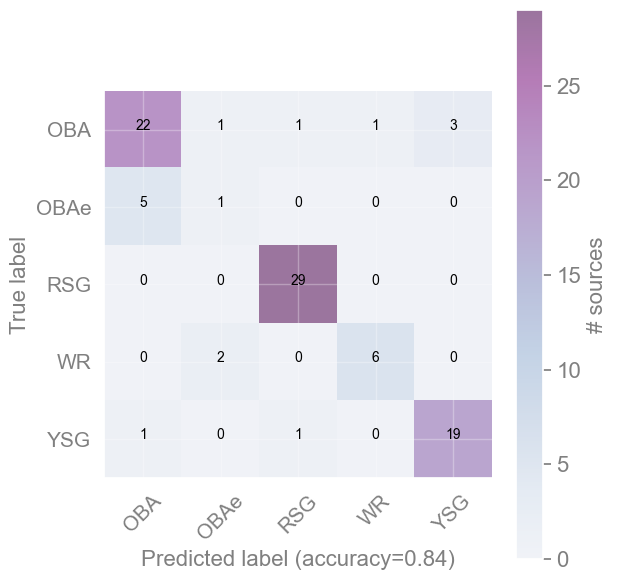
── Random Forest ──
precision recall f1-score support
OBA 0.78 0.75 0.76 28
OBAe 0.25 0.17 0.20 6
RSG 0.97 1.00 0.98 29
WR 0.83 0.62 0.71 8
YSG 0.84 1.00 0.91 21
accuracy 0.84 92
macro avg 0.73 0.71 0.71 92
weighted avg 0.82 0.84 0.83 92
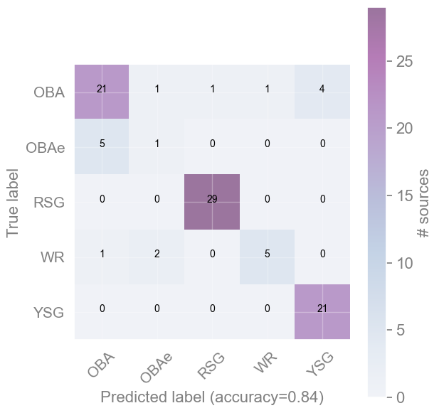
[Spoiler] (click here to expand)
Typical observations when comparing multi-class SVM vs Random Forest:
Overall accuracy: RF often edges out linear SVM on imbalanced multi-class data, because it aggregates many trees and handles rare classes better.
Rare classes (WR, YSG): Both classifiers struggle. WR and YSG have far fewer training examples than OBA. The classification report will show lower recall for these classes.
SVM behaviour: A linear SVM separates classes with hyperplanes. If classes overlap in the 3-band feature space, a linear boundary is insufficient — try
kernel='rbf'for a non-linear boundary.RF behaviour: RF is less sensitive to class imbalance and tends to produce more reliable per-class F1 scores.
Key takeaway: Accuracy alone is misleading when classes are imbalanced. Always inspect per-class precision and recall — a model that labels everything as OBA (the majority class) can still look good on accuracy while completely failing on WR or YSG.
[End of solution]
Classification algorithms overview#
This is a presentation of the set of sklearn algorithms with toy datasets, and then describe some of them.
This serves as a showcase of the available methods and how they compare. You can easily adapt any of these methods to the following examples or your own problems.
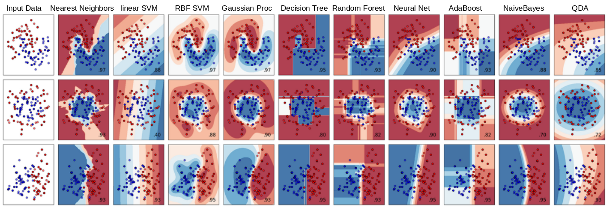
Overview of the clustering algorithms in sklearnQuestion [1 min]
Explore the results above - what differences do you notice?
[Spoiler] (click here to expand)
An indicative list of noticeable differences:
- There is not a single best algorithm.
- Some algorithms are more able to separate classes.
- Some algorithms have limited ability (e.g. the linear SVM with non-linear distributed data).
###EOF